PET816 Gallery
(C) 2010-2010 André Fachat
On this page I have put some pictures of the board and the benchmarks I did with the board.
Click on the images to enlarge
| The board from top ... | 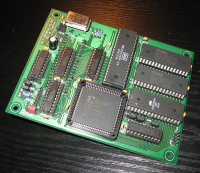 |
| 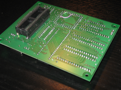 | ... and from the bottom. You can see the three bridges that make up the difference between V1.2A and V1.2B |
| The Commodore 8296 test system | 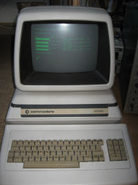 |
| 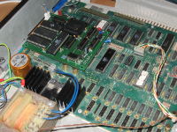 | ... with the board installed. The white connector at the left upper end of the board is an additional power connector, going to the tape port |
| The board installed into the 8296. Here you see the additional power cable going out of the case and to the C2N232 connector I reused to get the power ... | 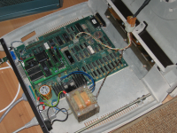 |
| 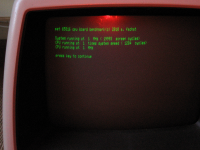 | The benchmark determines the system speed using the screen sync frequency. |
| Yeah! The system runs at 10 MHz! Each benchmark has two lines. The first line shows the configuration for the clock register ("speed"), and control register ("conf"), plus it names the actual bits that are set for convenience. The second line shows the benchmark result in terms of system cycles for the benchmark loop, and the speed calculated from that. |  |
| 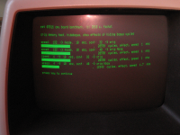 | For certain workloads quite some speedup can be obtained by hiding bogus cycles |
| As there is only one screen read cycle per benchmark loop, not much of a speedup is expected, as shown. But other workloads may differ, esp. when they already run in fast RAM | 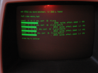 |
| 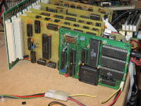 | Here the board is installed in my 2 MHz PET replica |
| The benchmark calibrates itself here as well | 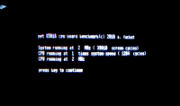 |
| 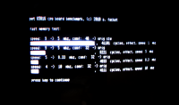 | Yeah, runs at 10 MHz as well! |
| This shows the effect of the FASTMODE clock register bit | 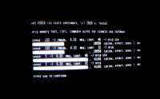 |
| 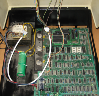 | The board installed in a 4032 PET. Note that the 4032 is actually broken. It seems to have some defective RAM chip, but it can actually be used running completely in the 65816 board. |
| Speed benchmark showing the 4032 at about 10 MHz. (Note the screen cycles is faked. The code assumes 20000 cycles per screen for 1 MHz operation, but this non-CRTC model has about 16000 cycles only. | 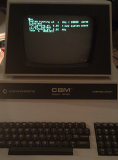 |
 | The first prototype installed in the 8296 test system |
| The first working prototype (with the fixed address drivers, that weren't '273 in the beginning)) |  |
{kind=link}
{kind=link}
{kind=link}
{kind=link}
{kind=link}
{kind=link}
{kind=link}
{kind=link}
{kind=link}
{kind=link}
{kind=link}
{kind=link}
{kind=link}
{kind=link}
Return to Homepage